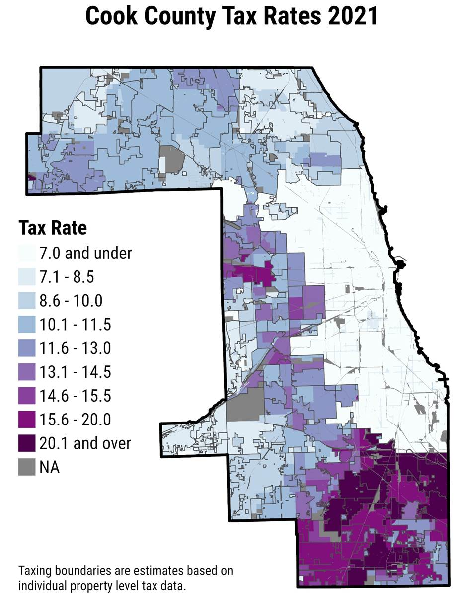

High Countywide Property Tax Collection Rate Shrouds South Suburban Financial Woes
Note: This is the first periodic newsletter from the Research Team in Cook County Treasurer Maria Pappas’ office. The newsletters will provide analyses, observations and insights into Cook County’s property tax system.
Introduction
The historically high rate of property tax collections in Cook County held steady into 2023, but that overall high collection rate masks a little-known fact: collections in many economically struggling, mostly minority south suburbs are perilously low.
Those collection rates, which were below 53% in four suburbs, make it tough for schools, municipalities and other government agencies to provide basic services. For example, in Ford Heights — where the collection rate was 29.3% compared to the countywide rate of 96.0% — has not been able to afford a police force for years.
The inability to collect taxes owed to those communities also creates pressure on public officials to further increase taxes, which can push some of the highest tax rates in the nation to even more stratospheric levels.
Another key finding from the Treasurer’s Office’s examination of collections for bills mailed last year that were due Dec. 30: collection of property taxes on vacant properties, many of which likely have been abandoned, stood below 71%.
Background
The Treasurer’s Office bills and collects property taxes for all local taxing districts in Cook County. For the 2021 tax year, which were billed in 2022, those taxing districts sought a total of $16.7 billion in property taxes.
Those bills, and the uneven impact they had on taxpayers in different areas of the county, were analyzed by the Treasurer’s Office in early December, when the second installment bills were mailed. Payments were due Dec. 30, 2022.
This analysis looked at how much money was collected 25 days after bills were due and compared those collections to previous years’ collections at the same point in the collection cycle.
Historical trends indicate collections will continue to rise in coming months, particularly in the weeks before the Annual Tax Sale, which can over time result in the loss of one’s property. That sale is held about 13 months after the due date.
Figure 1: Total taxes paid on each day of tax year 2021 with the running sum of taxes paid
Countywide Overview
As of Jan. 25, 2023, Cook County had collected 96.0% of property taxes billed for tax year 2021, which were due on Dec. 30, 2022.
The 2021 collection rate is in line with those of prior years. Collection rates 25 days after the second-installment tax bills were due in the previous four years were all between 95% and 96% (Table 1).
Collection Rates 25 days
| Tax Year | Amount Billed |
Amount Collected (25 days after due) |
Collection Rate (25 days after due) |
2017 |
$14.4 Billion |
$13.8 Billion |
95.5% |
2018 |
$14.9 Billion |
$14.3 Billion |
95.6% |
2019 |
$15.6 Billion |
$14.9 Billion |
96.0% |
2020 |
$16.1 Billion |
$15.3 Billion |
95.3% |
2021 |
$16.7 Billion |
$16.0 Billion |
96.0% |
Table 1: Collection Rates 25 days after the second installment of property taxes were due in tax years 2017 to 2021. Collection rates are estimates based on the amount of tax dollars paid with refunds subtracted.
As noted above, collection rates usually increase in the months and years after the bills are due, as delinquent taxes are paid or eventually sold at tax sales. The collection rates for prior years to date currently stand at 98% to 99% countywide.
The 25-day collection rates reflect the amount of money collected for each taxing district in the county, minus the amount refunded for various reasons, including bounced checks, duplicate payments and overpayments.
Tax year 2021 collection rates for most types of property, including commercial and industrial properties, apartment buildings, condominiums and single-family homes, were 95% or higher. The exception was vacant land, on which only 70.7% of the money billed had been collected (Table 2).
Vacant land has had a higher likelihood of becoming tax delinquent and being offered at the Annual Tax Sale or the last-ditch Scavenger Sale for chronically delinquent properties. About 63% of properties offered at the 2022 Scavenger Sale were vacant lots, even though vacant lots account for only 3.6% of the county’s taxable properties, according to a Treasurer’s Office study.
Commercial and industrial properties have slightly lower collection rates than residential and multi-family properties. Incentive properties — which pay taxes on a lower percentage of their assessed values — have higher collection rates than non-incentive properties.
Collection Rates by Property Classification
|
Major Class |
Number of PINs |
Taxes Billed |
Collections |
Collection Rate |
Vacant Land - Class 1 |
64,224 |
$126,022,144.39 |
$89,066,290.85 |
70.7% |
Residential - Class 2 |
1,587,866 |
$9,242,299,358.51 |
$8,921,290,270.37 |
96.5% |
Multi Family - Class 3 |
21,109 |
$968,938,239.59 |
$949,140,348.78 |
98.0% |
Not for Profit - Class 4 |
461 |
$25,306,230.65 |
$24,666,471.47 |
97.5% |
Commercial/Industrial - Class 5 |
92,438 |
$5,980,338,793.25 |
$5,692,252,702.70 |
95.2% |
Industrial Incentive - Class 6 |
2,292 |
$233,042,283.93 |
$230,523,445.88 |
98.9% |
Commercial Incentive - Class 7 |
307 |
$63,663,978.06 |
$63,529,919.74 |
99.8% |
Comm./Ind. Incentive - Class 8 |
1,068 |
$50,559,112.67 |
$48,662,017.09 |
96.2% |
Residential - Class 9 |
986 |
$29,132,309.28 |
$29,060,640.59 |
99.8% |
County Totals |
1,770,751 |
$16,719,302,450.33 |
$16,048,192,107.47 |
96.0% |
Table 2: Collection rates by major property classification for tax year 2021 as of Jan. 25, 2023
While collection rates are relatively high countywide, they vary greatly across the county (Figure 2).
Collection Rates in Cook County Municipalities and Chicago Community Areas

Figure 2: Estimated Collection rates in Cook County suburbs and Chicago Community areas.
Municipalities
Collection rates across Cook County municipalities ranged from 29% to 99%. Collection rates for most municipalities were above 90%.
Collections are highest for the north, northwest, and western suburbs. The top 15 municipalities have collection rates above 98% (Table 3).
Municipalities with highest collection rates
|
Municipality* |
Total Billed |
Collected |
Collection Rate |
NORTH RIVERSIDE |
$26,085,529.46 |
$25,822,372.97 |
99.0% |
BUFFALO GROVE |
$41,563,401.43 |
$40,989,099.12 |
98.6% |
ROLLING MEADOWS |
$100,570,184.18 |
$99,050,923.56 |
98.5% |
NORRIDGE |
$44,172,197.16 |
$43,494,731.98 |
98.5% |
LA GRANGE PARK |
$41,203,919.72 |
$40,567,683.67 |
98.5% |
PALATINE |
$217,615,438.83 |
$214,056,269.30 |
98.4% |
RIVER FOREST |
$62,231,028.84 |
$61,205,801.39 |
98.4% |
ROSEMONT |
$92,603,301.73 |
$91,062,266.67 |
98.3% |
DES PLAINES |
$224,875,635.71 |
$221,113,809.66 |
98.3% |
SCHAUMBURG |
$388,757,719.63 |
$381,756,066.03 |
98.2% |
BARTLETT |
$49,205,266.31 |
$48,318,791.53 |
98.2% |
NORTHLAKE |
$56,113,224.46 |
$55,101,285.04 |
98.2% |
WILMETTE |
$165,080,522.55 |
$162,089,557.45 |
98.2% |
McCOOK |
$21,617,497.23 |
$21,223,484.52 |
98.2% |
NILES |
$128,531,642.36 |
$126,097,806.65 |
98.1% |
Table 3: The 15 municipalities with the highest tax year 2021 collection rates, as of Jan. 25, 2023
*For municipalities that are in multiple counties, only the parts of the municipalities that are in Cook County were analyzed. Municipalities with fewer than 500 properties in the county were omitted.
The south suburbs have the lowest collection rates. For the 2021 tax year, Harvey, Robbins, and Phoenix have collected between 49.9% and 52.1% of what they billed (Table 4). Ford Heights has by far the county’s lowest collection rate — an alarming 29.3%.
These rates are driven down by the high amount of vacant and abandoned properties. Ford Heights has the highest share of vacant lots in the county, at 47.1% of taxable properties, followed by Robbins at 37.5% and Dixmoor at 30.6%. In Harvey, the collection rate on vacant lots is 27.9%, and in Ford Heights it is 6.1%.
The treasurer’s office has found a correlation between share of vacant lots and low collection rates – in general, collection rates are lower in communities with high amounts of vacant land.
Municipalities with lowest collection rates
|
Municipality* |
Total Billed |
Collected |
Collection Rate |
FORD HEIGHTS |
$4,063,875.52 |
$1,190,180.99 |
29.3% |
ROBBINS |
$7,082,335.82 |
$3,533,294.90 |
49.9% |
HARVEY |
$56,949,413.45 |
$29,596,902.63 |
52.0% |
PHOENIX |
$2,765,463.67 |
$1,439,783.79 |
52.1% |
RIVERDALE |
$29,442,428.19 |
$18,336,191.03 |
62.3% |
CALUMET PARK |
$15,662,066.10 |
$11,691,759.20 |
74.7% |
MARKHAM |
$35,767,471.38 |
$26,998,233.22 |
75.5% |
DOLTON |
$56,520,337.49 |
$43,329,416.27 |
76.7% |
DIXMOOR |
$7,188,894.38 |
$5,619,754.92 |
78.2% |
BURNHAM |
$11,043,028.30 |
$8,681,833.70 |
78.6% |
CHICAGO HEIGHTS |
$76,914,915.97 |
$61,724,595.61 |
80.3% |
CALUMET CITY |
$94,346,445.93 |
$77,259,975.94 |
81.9% |
PARK FOREST |
$40,148,815.93 |
$33,318,458.94 |
83.0% |
MAYWOOD |
$51,908,412.99 |
$43,389,541.67 |
83.6% |
SOUTH CHICAGO HEIGHTS |
$9,937,083.52 |
$8,543,007.71 |
86.0% |
Table 4: The municipalities with the lowest collection rates in tax year 2021, as of Jan. 25, 2023
*For municipalities that are in multiple counties, only the parts of the municipalities that are in Cook County were analyzed. Municipalities with fewer than 500 properties in the county were omitted
Most municipalities have had similar collection rates for the most recent five tax years, with those rates fluctuating by fewer than 3 percentage points. The two outliers include Dixmoor, which has seen collection rates increase from an estimated 66.6% to 78.2% since 2017, and Ford Heights, which has had its collection rate fall by 9.1%.
Municipalities with low collection rates struggle to provide basic services. In Robbins, a village of 4,600, there were 23 water main breaks in 2022. Robbins Mayor Darren Bryant sought state and federal aid, saying: “We haven’t wrongfully neglected our infrastructure. We just never have had the money to repair it.”
Government leaders in Harvey, the most populous city in Cook County with a collection rate below 80%, laid off firefighters to make required payments to its public safety pension fund.
Decreased collections, and the stress they place on school districts, municipalities and other local governments, can put pressure on local leaders to vote for even higher levies — the amount of money they seek to collect from property taxes each year. Higher levies, in turn, lead to higher tax rates.
Further increases in tax rates in many south suburbs would worsen the outsized burden already placed on property owners in those towns.
A sign of that burden: The three municipalities with the highest tax rates in Cook County are all in the south suburbs, according to the Cook County Clerk’s Office. Park Forest has the highest composite tax rate at 41.6% of assessed values, followed by Riverdale at 31.1% and Phoenix at 30%. For comparison, the city of Chicago’s composite tax rate is 6.7% (Figure 3).
Collections in unincorporated areas are close to the countywide rate of 96.0%.
Tax Rates by Tax Code
Figure 3: Tax rates by tax code for tax year 2021
Chicago Community Areas
The collection rate in Chicago is slightly higher than the countywide rate of 96.5%, but as in suburban Cook County, rates vary from one area of the city to another. Collection rates among community areas varied from 74.6% to 98.6%.
The highest collection rates mostly were in or near downtown and on the North and Northwest sides (Table 5). The exceptions were in Mount Greenwood on the far southwest side and Pullman on the far South Side.
Community Areas with highest collection rates
|
Community Area |
Taxes Billed |
Collections |
Collection Rate |
PULLMAN |
$13,509,839.43 |
$13,326,574.54 |
98.6% |
LOOP |
$1,251,182,485.21 |
$1,230,177,072.58 |
98.3% |
UPTOWN |
$130,224,771.28 |
$127,896,634.42 |
98.2% |
LAKE VIEW |
$402,133,134.84 |
$394,309,428.51 |
98.1% |
MOUNT GREENWOOD |
$29,252,709.87 |
$28,678,182.38 |
98.0% |
EDISON PARK |
$33,540,352.92 |
$32,864,785.43 |
98.0% |
NORWOOD PARK |
$90,048,585.43 |
$88,147,518.83 |
97.9% |
LINCOLN SQUARE |
$108,357,362.28 |
$105,984,677.36 |
97.8% |
AVONDALE |
$84,168,972.75 |
$82,295,738.09 |
97.8% |
EDGEWATER |
$121,538,725.65 |
$118,780,418.18 |
97.7% |
NEAR NORTH SIDE |
$1,185,005,384.17 |
$1,157,526,776.83 |
97.7% |
FOREST GLEN |
$64,295,385.10 |
$62,789,407.24 |
97.7% |
DUNNING |
$68,939,740.99 |
$67,275,744.16 |
97.6% |
NEAR SOUTH SIDE |
$155,145,026.41 |
$151,041,740.78 |
97.4% |
NEAR WEST SIDE |
$611,459,184.51 |
$594,780,047.27 |
97.3% |
Table 5: Chicago Community Areas with the highest tax year 2021 collection rates, as of Jan. 25, 2023
The lowest collection rates are in communities on the South and West sides that, like struggling south suburban communities, are burdened by high numbers of vacant and abandoned properties (Table 6). Englewood, West Garfield Park and Fuller Park have the lowest collection rates in the city of Chicago.
Community Areas with lowest collection rates
| Community Area | Taxes Billed |
Collections |
Collection Rate |
ENGLEWOOD |
$12,673,121.32 |
$9,454,673.41 |
74.6% |
WEST GARFIELD PARK |
$13,979,352.85 |
$10,599,730.77 |
75.8% |
FULLER PARK |
$3,404,324.32 |
$2,584,830.70 |
75.9% |
WEST ENGLEWOOD |
$12,272,252.00 |
$9,511,641.68 |
77.5% |
RIVERDALE CA |
$3,044,762.17 |
$2,393,825.60 |
78.6% |
WASHINGTON PARK |
$10,295,003.78 |
$8,406,551.80 |
81.7% |
ROSELAND |
$26,201,400.66 |
$21,397,543.40 |
81.7% |
NORTH LAWNDALE |
$30,206,370.13 |
$25,671,340.22 |
85.0% |
AUBURN GRESHAM |
$33,692,981.32 |
$28,732,156.95 |
85.3% |
SOUTH CHICAGO |
$17,180,826.02 |
$14,815,731.40 |
86.2% |
WOODLAWN |
$21,920,375.05 |
$19,001,812.34 |
86.7% |
WEST PULLMAN |
$14,192,613.38 |
$12,457,192.50 |
87.8% |
EAST GARFIELD PARK |
$21,806,832.40 |
$19,327,633.93 |
88.6% |
AVALON PARK |
$11,016,275.89 |
$9,784,982.90 |
88.8% |
GREATER GRAND CROSSING |
$24,311,620.95 |
$21,764,395.10 |
89.5% |
Table 6: Chicago Community Areas with the lowest tax year 2021 collection rates, as of Jan. 25, 2023
While property owners in some community areas struggle to pay their property taxes, the city’s overall collection rate is still high, so these communities are not in a precarious financial situation like low-income municipalities. Still, high delinquency rates are reflective of high rates of vacancy and abandonment and the struggles faced by those areas’ low-income residents.
The chronic delinquency in southern Cook County and Chicago’s South and West sides is tied to a history of racism, segregation and disinvestment in the Chicago area, explored in the office’s 2022 study “Maps of Inequality: From Redlining to Urban Decay and the Black Exodus.”
Conclusion
High overall property tax collection rates in Cook County mask persistently low collection rates in south suburban municipalities and west suburban Maywood that severely limit their ability to provide basic services to mostly minority, low-income residents — revealing yet another inequity in the property tax system.
That means there’s less money for education, public safety and other vital services. Much of the problem is fueled by wide swaths of tax-delinquent vacant and abandoned land.
Public policy makers should step up efforts to return vacant and abandoned properties to productive use and consider finding other funding mechanisms for schools and local governments.